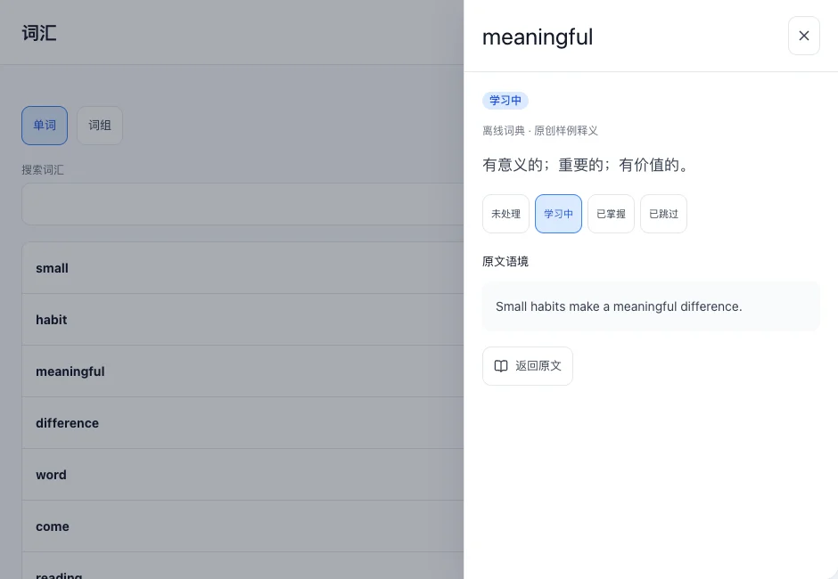
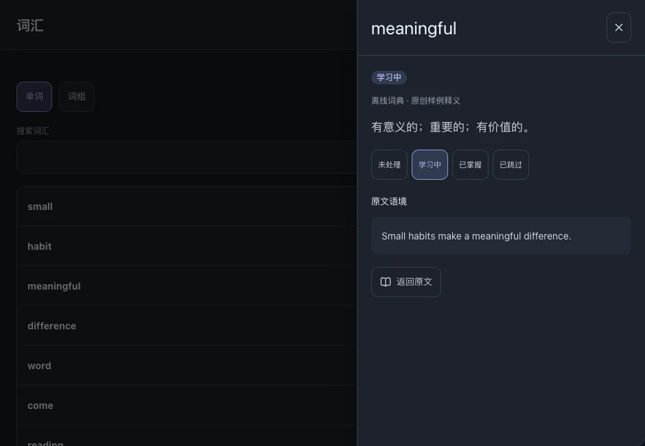

词汇与词组
整理从字幕中积累的单词与词组。每个条目保留来源，方便回到原句。
本页目录
查找词汇
- 进入“词汇”，切换单词或词组。
- 输入关键词搜索，或按学习状态筛选。找不到条目时，也检查当前学习语言。



调整学习状态
- 打开条目后选择合适的状态；修改多个条目时使用列表的选择工具。
- 标为“学习中”的词进入学习范围，是否到期由复习安排决定。
相关操作复习
返回原句
- 打开条目的来源或出现位置列表。
- 选择文件与原句，返回对应位置继续阅读。
整理从字幕中积累的单词与词组。每个条目保留来源，方便回到原句。


相关操作复习